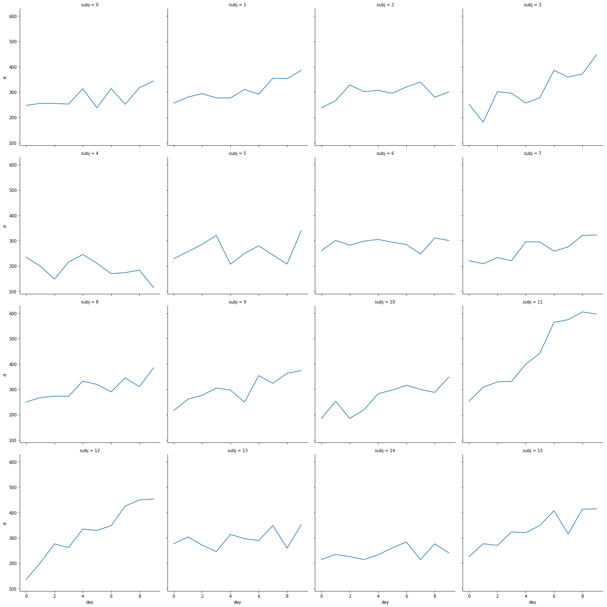

Mumford Stats practice#
Video 2: Two stage random effects formaulation#
Standard simple regression
\(RT = \beta_0 + \beta_1 Days + \epsilon\)
or another way of writing it is:
\(\begin{bmatrix}265\\252\\451\\335\end{bmatrix} = \begin{bmatrix}1&0\\1&1\\1&2\\1&3\end{bmatrix} \begin{bmatrix}\beta_0\\\beta_1\end{bmatrix} + \begin{bmatrix}\epsilon_1\\\epsilon_2\\\epsilon_3\\\epsilon_4\end{bmatrix}\)
which can be more compatx like this \(Y = \mathcal{Z}\beta + \epsilon, \epsilon \sum N(0, \sigma^2 I_n)\)
where \(\mathcal{Z}\) is the design matrix:
\(\mathcal{Z}=\begin{bmatrix}1&0\\1&1\\1&2\\1&3\end{bmatrix}\)
In the two stage model were estimate each subject’s slope and intercept separately:
\(Y_i = \mathcal{Z_i}\beta_i + \epsilon_i, \epsilon_i \sum N(0, \sigma^2 I_{n_i})\)
we are assuming \(\sigma\) is the same for each subject. Some other packages can do this.
The second stage model is
\(\beta_i = \mathcal{A_i}\beta + b_i, b_i \sim N(0, G)\)
\(b_i\) is the amount of noise between subjects in the slopes and intercept. It is expressed with a covariance term \(G\) because they might be correlated (slope and intercept). You don’t actually estimate the \(b_i\) values you estimate the \(G\).
\(\mathcal{A_i}\) is the identity matrix usually.
If you plug second stage into first stage:
\(Y_i = \mathcal{Z_i}\mathcal{A_i}\beta + \mathcal{Z_i}b_i+\epsilon_i, \epsilon_i \sim N(0, \sigma^2 I_{n_i}), b_i \sim N(0, G)\)
The \(\beta\) is the “fixed effect” usually what we are interested in assessing.
The \(\beta_i\) is the random effect variable of between subject variance
The \(epsilon_i\) is the within subject variance.
import numpy as np
import numpy.random as npr
import pandas as pd
import seaborn as sns
import statsmodels.api as sm
import statsmodels.formula.api as smf
# for py2r stuff
import os
os.environ['KMP_DUPLICATE_LIB_OK']='True'
import pymer4.models as pymer
def makeFakeSleepStudyData(subj_num, days, sigma):
subj_col = np.full((days,),subj_num)
day_col = np.arange(0,days)
intercept, slope = npr.multivariate_normal([251,10], [[24**2,0],[0,10**2]])
rt = intercept + slope*day_col + npr.normal(loc=0, scale=sigma, size=days)
return pd.DataFrame({'subj':subj_col, 'day':day_col, 'rt': rt})
nsubj=16
sigma = 30
days = 10
df = pd.concat([makeFakeSleepStudyData(subj_num,days, sigma) for subj_num in range(nsubj)])
sns.relplot(x='day', y='rt', col='subj', col_wrap=4, kind='line', data=df)
<seaborn.axisgrid.FacetGrid at 0x12ee2f320>

md=smf.mixedlm('rt ~ day', df, groups='subj', re_formula='~day')
mdf= md.fit()
print(mdf.summary())
Mixed Linear Model Regression Results
=============================================================
Model: MixedLM Dependent Variable: rt
No. Observations: 160 Method: REML
No. Groups: 16 Scale: 929.9743
Min. group size: 10 Log-Likelihood: -806.0022
Max. group size: 10 Converged: Yes
Mean group size: 10.0
-------------------------------------------------------------
Coef. Std.Err. z P>|z| [0.025 0.975]
-------------------------------------------------------------
Intercept 236.447 7.600 31.113 0.000 221.552 251.342
day 12.753 3.161 4.034 0.000 6.557 18.948
subj Var 602.795 11.695
subj x day Cov -108.392 3.582
day Var 148.609 2.023
=============================================================
model=pymer.Lmer('rt ~ day + (1+day|subj)', data=df)
print(model.fit(REML=True))
Formula: rt~day+(1+day|subj)
Family: gaussian Inference: parametric
Number of observations: 160 Groups: {'subj': 16.0}
Log-likelihood: -806.002 AIC: 1612.004
Random effects:
Name Var Std
subj (Intercept) 602.805 24.552
subj day 148.610 12.191
Residual 929.974 30.495
IV1 IV2 Corr
subj (Intercept) day -0.362
Fixed effects:
Estimate 2.5_ci 97.5_ci SE DF T-stat P-val Sig
(Intercept) 236.447 221.552 251.342 7.600 15.0 31.113 0.000 ***
day 12.753 6.557 18.948 3.161 15.0 4.034 0.001 **
model=pymer.Lmer('rt ~ day + (day|subj)', data=df)
print(model.fit(REML=True))
Formula: rt~day+(day|subj)
Family: gaussian Inference: parametric
Number of observations: 160 Groups: {'subj': 16.0}
Log-likelihood: -806.002 AIC: 1612.004
Random effects:
Name Var Std
subj (Intercept) 602.805 24.552
subj day 148.610 12.191
Residual 929.974 30.495
IV1 IV2 Corr
subj (Intercept) day -0.362
Fixed effects:
Estimate 2.5_ci 97.5_ci SE DF T-stat P-val Sig
(Intercept) 236.447 221.552 251.342 7.600 15.0 31.113 0.000 ***
day 12.753 6.557 18.948 3.161 15.0 4.034 0.001 **
model.fixef
| (Intercept) | day | |
|---|---|---|
| 0 | 239.488909 | 8.728109 |
| 1 | 246.447224 | 13.253108 |
| 2 | 262.839296 | 6.840064 |
| 3 | 220.598601 | 20.848688 |
| 4 | 228.604242 | -7.779330 |
| 5 | 246.984783 | 3.143458 |
| 6 | 266.748099 | 3.848168 |
| 7 | 219.382655 | 10.854378 |
| 8 | 246.313350 | 12.447120 |
| 9 | 234.900175 | 14.817895 |
| 10 | 210.300050 | 13.592617 |
| 11 | 241.018968 | 43.180904 |
| 12 | 191.800387 | 30.020356 |
| 13 | 259.533097 | 7.212922 |
| 14 | 226.341521 | 3.582218 |
| 15 | 241.852361 | 19.454433 |
res.BIC
---------------------------------------------------------------------------
AttributeError Traceback (most recent call last)
<ipython-input-35-28d130b93a0b> in <module>()
----> 1 res.BIC
~/.virtualenvs/science/lib/python3.7/site-packages/pandas/core/generic.py in __getattr__(self, name)
5137 if self._info_axis._can_hold_identifiers_and_holds_name(name):
5138 return self[name]
-> 5139 return object.__getattribute__(self, name)
5140
5141 def __setattr__(self, name: str, value) -> None:
AttributeError: 'DataFrame' object has no attribute 'BIC'
t-test equivalent#
group1mean, group2mean = 10, 20
groupstd = 2.
subj_col = range(30)
data = np.concatenate((npr.normal(loc=group1mean, scale=groupstd, size=15),npr.normal(loc=group2mean, scale=groupstd, size=15)))
cond = [1]*15+[2]*15
df=pd.DataFrame({'subj': subj_col, 'cond': cond, 'dv': data})
df.head()
| subj | cond | dv | |
|---|---|---|---|
| 0 | 0 | 1 | 9.019312 |
| 1 | 1 | 1 | 7.906432 |
| 2 | 2 | 1 | 11.817954 |
| 3 | 3 | 1 | 8.498817 |
| 4 | 4 | 1 | 13.186811 |
pd.get_dummies(df.cond)
| 1 | 2 | |
|---|---|---|
| 0 | 1 | 0 |
| 1 | 1 | 0 |
| 2 | 1 | 0 |
| 3 | 1 | 0 |
| 4 | 1 | 0 |
| 5 | 1 | 0 |
| 6 | 1 | 0 |
| 7 | 1 | 0 |
| 8 | 1 | 0 |
| 9 | 1 | 0 |
| 10 | 1 | 0 |
| 11 | 1 | 0 |
| 12 | 1 | 0 |
| 13 | 1 | 0 |
| 14 | 1 | 0 |
| 15 | 0 | 1 |
| 16 | 0 | 1 |
| 17 | 0 | 1 |
| 18 | 0 | 1 |
| 19 | 0 | 1 |
| 20 | 0 | 1 |
| 21 | 0 | 1 |
| 22 | 0 | 1 |
| 23 | 0 | 1 |
| 24 | 0 | 1 |
| 25 | 0 | 1 |
| 26 | 0 | 1 |
| 27 | 0 | 1 |
| 28 | 0 | 1 |
| 29 | 0 | 1 |
model=pymer.Lm('dv ~ 1+cond', data=df)
print(model.fit(REML=True))
Formula: dv~1+cond
Family: gaussian Estimator: OLS
Std-errors: non-robust CIs: standard 95% Inference: parametric
Number of observations: 30 R^2: 0.924 R^2_adj: 0.921
Log-likelihood: -60.109 AIC: 124.219 BIC: 127.021
Fixed effects:
Estimate 2.5_ci 97.5_ci SE DF T-stat P-val Sig
Intercept 8.612 7.630 9.594 0.480 28 17.957 0.0 ***
cond 12.520 11.131 13.909 0.678 28 18.459 0.0 ***
import pingouin as pg
pg.ttest(df[df['cond']==0]['dv'],df[df['cond']==1]['dv'])
| T | dof | tail | p-val | CI95% | cohen-d | BF10 | power | |
|---|---|---|---|---|---|---|---|---|
| T-test | -18.459 | 28 | two-sided | 3.284804e-17 | [-13.91, -11.13] | 6.74 | 8.033e+13 | 1.0 |